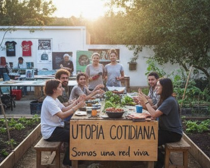
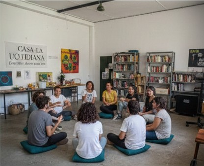

Quienes somos
Somos un colectivo diverso que habita y cuida este espacio común. Utopía Cotidiana es un proyecto de vida colectiva que apuesta por la autonomía, la horizontalidad y el apoyo mutuo. No somos un centro cultural ni una asociación formal: somos una red viva de personas que colaboran, aprenden y se acompañan.
Qué hacemos
Casa La Utopía Cotidiana es un espacio autogestionado para encuentro, aprendizaje y acción colectiva. Talleres, apoyo mutuo, biblioteca y alojamiento temporal para proyectos. Abierto a quien respete nuestros principios de autonomía, horizontalidad y cuidado comunitario.
¿Cómo lo queremos hacer?

En "Utopía Cotidiana", construimos el mundo que queremos aquí y ahora: autogestión radical, apoyo mutuo y decisiones horizontales en asamblea. Rechazamos toda jerarquía, autoridad y lógica capitalista, optando por la acción directa para vivir libres, justos e iguales, demostrando que otra forma de existir es posible en el día a día.